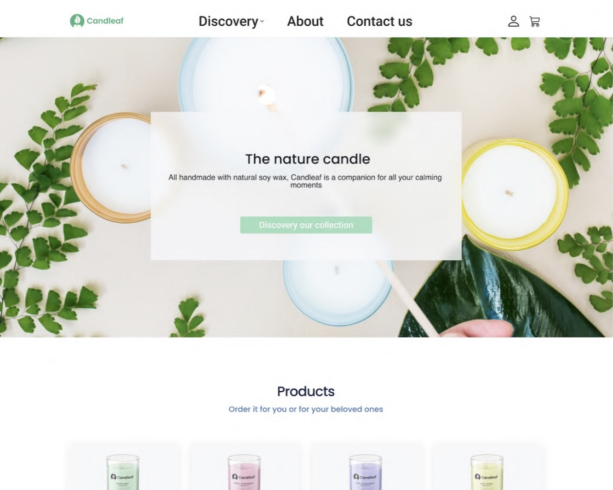

So far, I have found the sites of the week enjoyable, but not today… This week's site was Chicoree Leeroux, which I thought was quite busy with an unclear colour scheme when scrolling further through the site. I found the graphics outdated; I have always preferred minimalistic designs. Nonetheless, exploring this site was intriguing as I couldn't immediately understand the designers' reasoning for certain elements. Perhaps the loud colour scheme is due to coffee being the main stimulant product.
The tutorial taught us about grids, visual hierarchy, colour and typography, scale, white space and balance. I participated in an activity improving visual techniques. This activity solidified the information we listened to and encouraged me to apply these methods. Haowei then covered affordances, a design element that suggests how the user should interact. These included functions such as links, icons and buttons.
The tutors emphasised we carefully consider paragraph width, character count, and font scaling for readability. We were split into breakout rooms to evaluate a candle website's typography, consistency and grammar. Discussions with peers are valuable as we can apply concepts together and gain new perspectives, encouraging further learning. Many of my team members pointed out errors in the website that I would've missed on my own. This collaborative task was valuable and made me think critically about my own design choices.
After returning from the break, I developed my wireframes, iterations and style guide for Assignment 2.1, and we briefly reviewed the following stages: final design prototype and documentation.